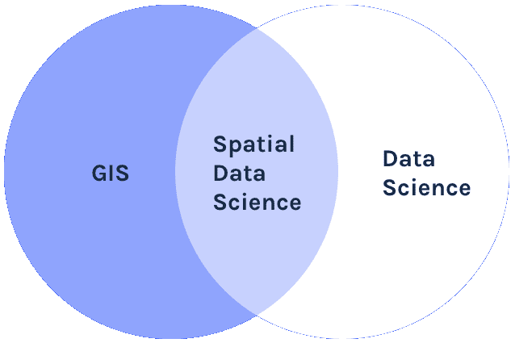
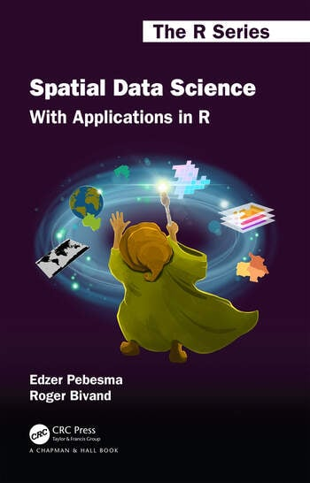

Spatial Data Science with R
GIS and Public Health
Extremely useful in providing a fresh outlook to public health.
Provides opportunity to enable overlaying data with its spatial representation
Supports better planning and decision-making.
The convergence of many new sub-disciplines:
- medical geography
- public health informatics
- data science

Map of the plague in the province of Bari, Naples, 1690-1692
The map shows areas most affected and the boundaries of a military quarantine imposed to prevent its spread to neighboring towns and to other provinces.
Applications of GIS in Public Health
- disease surveillance
- environmental health
- infectious diseases
- mathematical modelling
- agent based modelling
- population genetics
- medical imagining
- cancer biology


While traditional uses of GIS in healthcare still are relevant, newer methods and advancing technology would be monumental for public health research.
What is Spatial Data Science?
Spatial data science (SDS) is a subset of Data Science that focuses on the unique characteristics of spatial data, moving beyond simply looking at where things happen to understand why they happen there.

Like data science, spatial data science seems to be a field that arises bottom-up in and from many existing scientific disciplines and industrial activities concerned with application of spatial data, rather than being a sub-discipline of an existing scientific discipline.
Edzer Pebesma, Roger Bivand - Spatial Data Science With Applications in R
How is it different from Data Science?

Why Spatial Data Science for Public Health?


Potential of Spatial Data Science for Public Health
Wealth of Spatial Data
70% of all data that is generated data has spatial attributes
Routine health data can be geo-referenced
Provide a gateway for researchers and practitioners to examine the role and harness the power of SDS in public health
Coupled with the emerging field of spatial statistics, the analysis of this location-based data is developing new and novel directions for public health.
Core Concepts related to GIS
Spatial data are fundamental to many geographical analyses and spatial data science draws strongly from key geographical concepts
First Law of Geography
“Everything is related to everything else, but near things are more related than distant things”
Waldo Tobler, 1970
Spatial Dependence and Complete Spatial Randomness
Spatial dependence is “the propensity for nearby locations to influence each other and to possess similar attributes”.

This means natural phenomenon are not spatially distributed at random.
- temparature,
- rainfall,
- population density,
- socio-economic conditions etc.
It can be measured by the indices of Spatial Autocorrelation.
Spatial Autocorrelation
Refers to the presence of systematic spatial variation in a mapped variable.
The terms spatial association and spatial dependence are often used to reflect spatial auto- correlation as well.

Indices to measure Spatial Dependence
Covariance Functions and Variograms
Global Spatial Autocorrelation Measures
- Moran’s I index
- General G-Statistic
- Geary’s C index
Local Indicators of Spatial Association (LISA)
- Local Moran’s I index
- Getis-Ord Gi and Gi∗ statistics
Space-Time Correlation Analysis
- Bivariate Moran’s I for STC
- Differential Moran’s I
- Emerging Hot Spot Analysis (EHSA)


Map Projections & coordinate reference system (CRS)
Map projections try to transform the earth from its spherical shape (3D) to a planar shape (2D).
A CRS then defines how the two-dimensional, projected map in your GIS relates to real places on the earth.
The decision of which depends on the extent of the area, analysis type, and often on the availability of data.

Why is the CRS Important?
Earth is a GEIOD
Different Projection Systems
CRS in Action
Data Science as a methodological approach
The key word in data science is not data, it is science.
– Jeff Leek, JHU Data Science Lab
Reproducible Research

Reproducible Research
There are four key elements of reproducible research:
- data documentation
- data publication
- code publication,
- output publication.

Tools for Spatial Data Science
- GIS related
- Data Science related
- Spatial Data Science related
R is the best spatial data science tool available for public health !!!
R provides a range of powerful packages for geospatial analysis, enabling advanced computations and analytics.
R Spatial Analysis Ecosystem

R Spatial Learning Resources
Wealth of Resource material
Powerful tools/packages
seamlessly handle vector and raster data
inractive visualization
end-to-end solution

Newest addition: Spatial Data Science: With Applications in R
